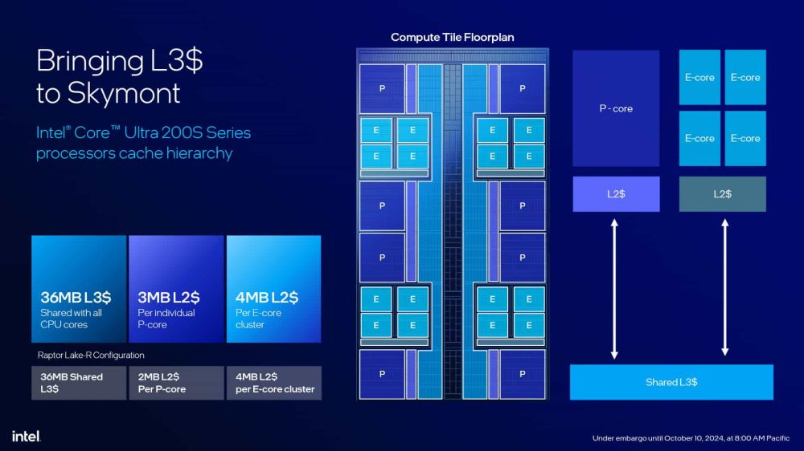
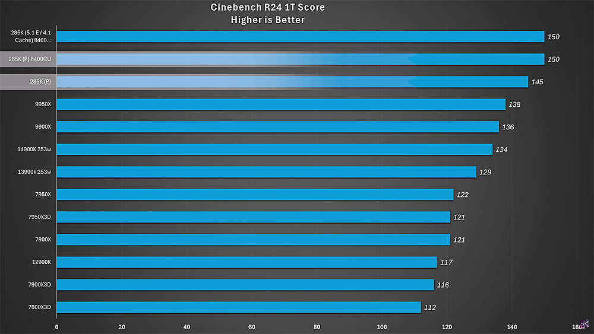
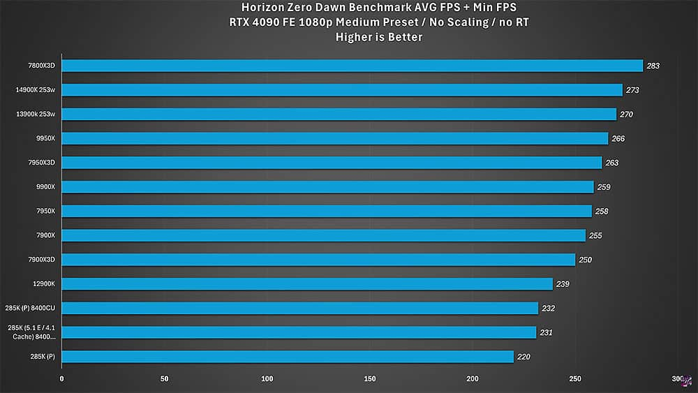

El Intel Core Ultra 9 285K está lastrado por sus E-Core y Caché: iguala al Ryzen 7 7800X3D en juegos haciéndole overclock a ambos apartados
Hasta ahora todo lo que habíamos visto con Intel y sus E-Core y P-Core era bastante simple de
comprender, puesto que los segundos impulsaban el rendimiento y los primeros recibían las tareas
livianas y anexas para mantener los consumos lo más bajos posibles. Con la arquitectura Arrow
Lake-S esto se terminó. Su Compute Tile lo cambia todo y su diseño MCM implica que E-Core y
P-Core no tienen la misma importancia. De hecho, se ha demostrado que en un Core Ultra 9 285K el
overclock a los E-Core y Caché aumenta increíblemente el rendimiento en todos los ámbitos,
incluido el gaming.
Los P-Core han dejado de importar en gran parte. El aumento de rendimiento a base de IPC, que no
de frecuencia, y la gestión de la L3 con el Ringbus y los E-Core ha cambiado y girado las
tornas. Lo que vamos a ver es la confirmación de que el diseño de Intel es una vuelta de tuerca
que no casa, precisamente, con la eficiencia, si lo que se busca es el mejor rendimiento, y como
siempre, Windows está por medio.
El Intel Core Ultra 9 285K aumenta mucho su rendimiento con overclock a los E-Core y Caché

No es que sea una sorpresa, al menos en parte. Visto el Ringbus de una parada es totalmente normal que acelerando la velocidad del mismo con la caché y haciendo que los E-Core no sean un problema que ralentice el salto a los P-Core de los datos, el rendimiento termine por aumentar. Sobre todo en los juegos, que es precisamente donde Intel ha fallado y ha sido muy criticada.
Es cierto que las CUDIMM a 8.400 ayudan un poco a impulsar el rendimiento en según qué benchmarks o juegos, porque al final todo suma. Así que lo que vamos a ver es precisamente eso, un Core Ultra 9 285K con unas memorias DDR5-8400 CUDIMM y con overclock en los E-Core a 5,1 GHz, mientras que la caché sube hasta los 4,1 GHz.
JayzTwoCents compara con el procesador de stock y sin dicha RAM, así como de stock y con esta DDR5 para ver las diferencias de las tres configuraciones. Cogeremos los datos más llamativos para ver las mayores diferencias, porque hay benchmarks donde según el setting no hay siquiera aumento de rendimiento, sobre todo con la CUDIMM y software como Blender, por ejemplo.
Es más importante el overclock que la velocidad de la memoria

En Cinebench 2024 en ST vemos perfectamente que apenas hay aumento de la puntuación al incluir la CUDIMM de alta frecuencia más el overclock, de hecho, curiosamente, el overclock a la caché y E-Cores en el Core Ultra 9 285K no influye lo más mínimo, algo lógico puesto que cargamos un P-Core, pero esto también nos dice que aquí la caché y el Ringbus no tienen tampoco nada que hacer. Esto es debido a que Thread Director 3.0 envía correctamente la carga al primer P-Core del anillo, que está pegado al D2D. Intel Core Ultra 9 285K Cinebench 2024 MT overclock E-Cores y Caché Intel Core Ultra 9 285K Geekbench overclock E-Cores y Caché Geekbench muestra otras curiosidades, ya que con CUDIMM y esa velocidad de 8.400 MHz mejora mucho la puntuación MT, lo esperable en esta suite, pero con el overclock apenas hay ascenso, lo cual solo evidencia que o bien Windows no envía correctamente la asignación de las tareas mediante su planificador a los E-Core, o bien, la suite no trabaja bien con esta nueva arquitectura. Veremos esto más adelante.

En juegos tenemos más datos interesantes a analizar de este Core Ultra 9 285K con overclock en los E-Core y caché. Con Horizon Zero Dawn tenemos un rendimiento totalmente deficiente en los tres escenarios del procesador, otro claro síntoma de que el motor del juego y Windows no están haciendo, al parecer, bien su trabajo con Thread Director 3.0, donde además es un juego bastante dependiente de la latencia, solo hay que ver el subidón con la CUDIMM.
En F1 2024 vemos una subida más que interesante solo mejorando la velocidad de la memoria, lo que también ayuda a reducir la latencia con el IMC, mientras que con overclock apenas hay mejora real, pero se sitúa a solo 2 FPS de media del 7800X3D.
Cyberpunk 2077 es un caso particular, porque si bien la velocidad de la DDR5 no importa demasiado, el overclock sí que dispara el rendimiento en 21 FPS, dejándolo igualmente y por la mínima al nivel de la mejor opción de AMD.
Borderlands 3 consigue otro dato increíble. Y es que de ser el segundo por la cola de stock, a las dos primeras configuraciones superando al 7800X3D por algunos FPS, juego que agradece y mucho la subida de frecuencias en ambos escenarios, más por la RAM que por el propio overclock.
Por tanto, parece que hay trabajo por hacer de parte de Intel y Microsoft con estos Core Ultra 200S, sobre todo con el Core Ultra 9 285K, ya que el hecho de que con overclock a los E-Core y Caché aumente tanto el rendimiento solo muestra los problemas de la arquitectura y la solución. Lo que no sabemos es cuánto ha aumentado el consumo de media, un dato que sería interesante conocer, y que rompe otra de las mejoras de esta serie. ¿No hubiese sido más óptimo lanzar esta serie de procesadores con un consumo parecido a la anterior y un salto de rendimiento evidente a optar por la eficiencia como punta de lanza? Intel conocía perfectamente sus debilidades por Meteor Lake, está claro que la decisión no fue la óptima, seguramente por no ver otra vez un caso como el de los Core 13 y Core 14, quizás pecaron de cautos a tenor de los datos vistos.